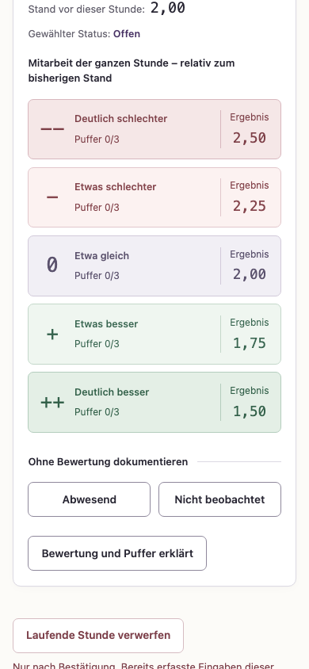
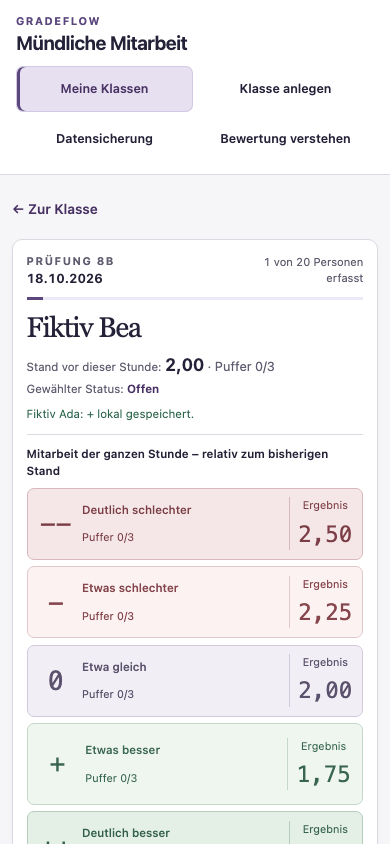
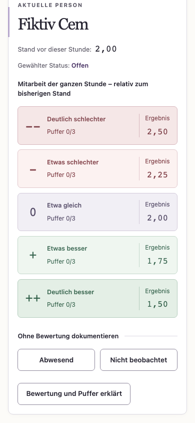
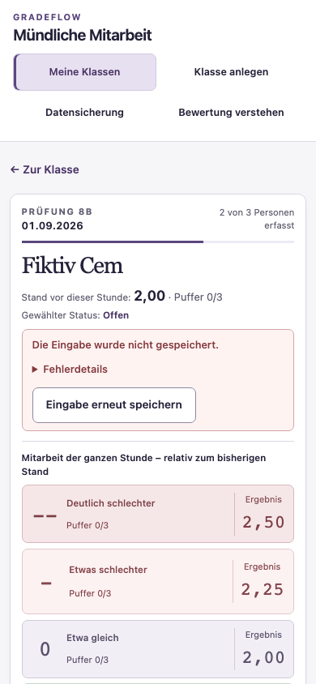

Der freigegebene Umbau ist umgesetzt. Derselbe Ablauf mit denselben 20 fiktiven Namen: Nach der Eingabe für Ada steht Bea zur Bewertung bereit.
Erstes Bewertungssymbol: vorher 22, jetzt 2 Tab-Schritte.


Unveränderte Screenshots des tatsächlichen Browser-Sichtfensters, zur Gegenüberstellung auf die verfügbare Breite skaliert. Name, Datum, Fortschritt und Speicherhinweis sind in der neuen Ansicht bei der Eingabe sichtbar. Auf kleinen Displays ist die ergänzende Personenliste über „Person wählen“ erreichbar.


Die Fehlerbilder verwenden denselben fiktiven Drei-Personen-Fall. Die Eingabe für die letzte offene Person scheitert an einer simulierten Speicherverweigerung. Der gespeicherte Bestand bleibt unverändert.
112 Tests bestanden; Produktionsbrowser auf drei Breiten, 60 Reloads nach Einzelbeobachtungen, Sicherungsrundlauf, Zweit-Tab-Schutz und echte CSV-/Excel-Dateien geprüft. Die Fachregeln und der historische Teststand v0.5.0 bleiben erhalten.
Technische Prüfung auf diesem Mac mit Chromium; keine neue Usability-Erhebung und kein Nachweis für echte Mobilgeräte oder Windows.